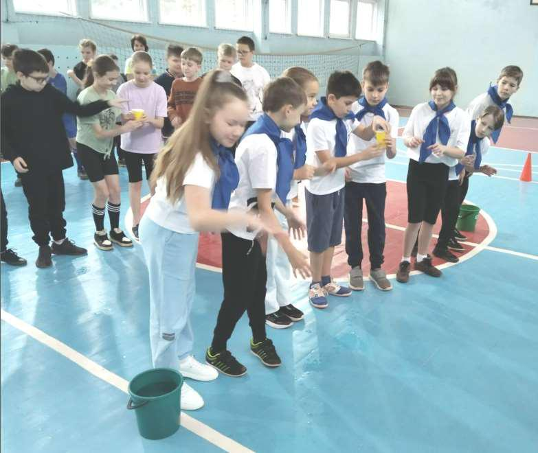
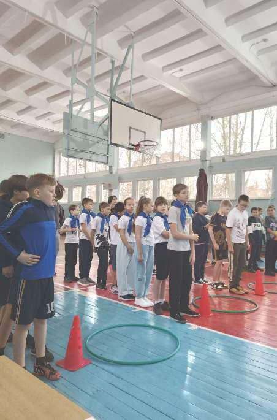
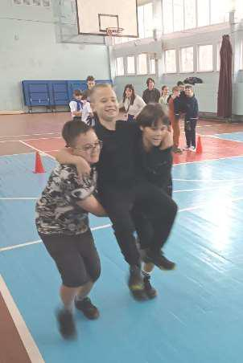
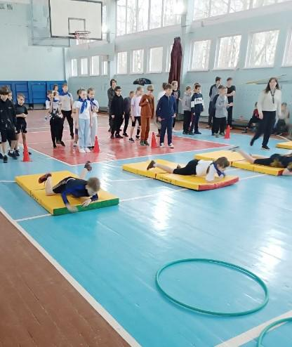
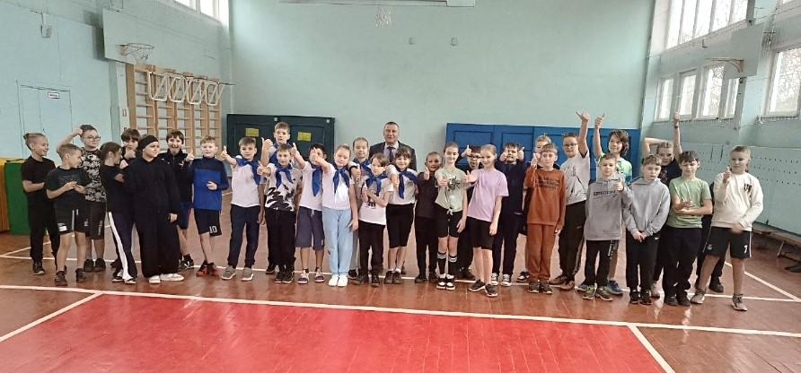
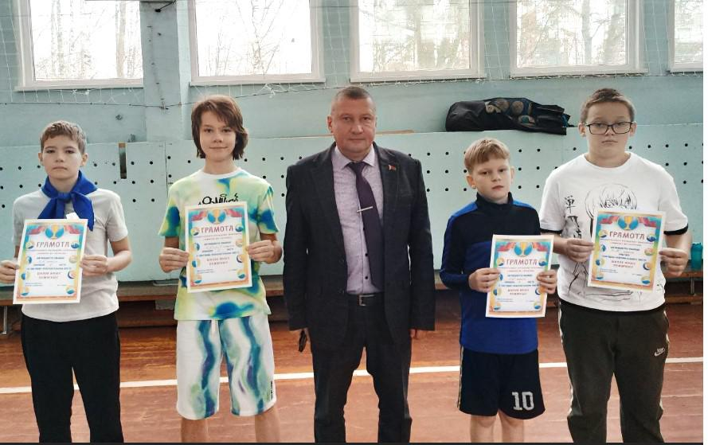

ШКОЛА ЮНЫХ ПОЖАРНЫХ
22 ноября, в рамках шестого школьного дня с учащимися 5-6-х классов Государственного учреждения образования прошла спортивно-развлекательная игра «Школа юных пожарных». В игре приняли участие 4 команды: 5 «А», 5 «Б», 5 «В» и сборная команда 6 «А» и 6 «Г» классов. К слову сказать, ребята из 6 «Г» класса совсем недавно стали членами Белорусской молодёжной общественной организации спасателей-пожарных.

В начале мероприятия руководитель по военно-патриотическому воспитанию гимназии Юрий Евсеенко рассказал участникам игры о задачах Министерства по чрезвычайным ситуациям Республики Беларусь, а также о том, какими качествами должны обладать настоящие спасатели.



Игра состояла из практических и теоретических заданий.
В ходе практических заданий под руководством учителей физической культуры Анжелы Власовой и Ионны Василевской юным пожарным предстояло вывести команду из задымленного помещения, эвакуировать пострадавшего при пожаре, потушить очаг воспламенения, пройти полосу препятствий, на время собрать пазл, раскрывающий повседневную деятельность пожарных. В теоретической части команды соревновались в знании правил безопасного поведения.

С самого начала соревнований каждая команда стремилась добиться наилучшего результата. Отставание в очках на протяжении всей игры было минимальным. Заметно выделялась команда 5 «Б» класса. Сплоченность, дисциплина и однообразный стиль одежды стали визитной карточкой команды. Слаженные совместные действия ребят отразились и на результатах – команда 5 «Б» класса заняла 1 место. Всего на один балл отстала сборная команда 6-х классов. Третье место у команды 5 «А» класса, ребят подвели штрафные баллы.
Игра была напряженной и увлекательной, что позитивно отразилось и на настроении ребят.
